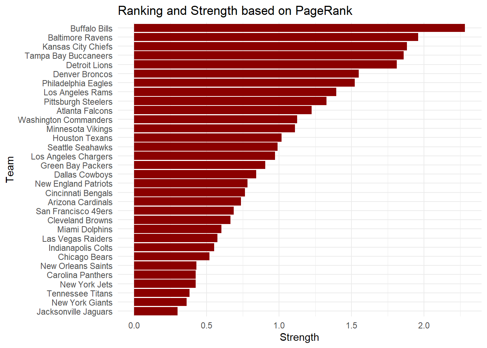
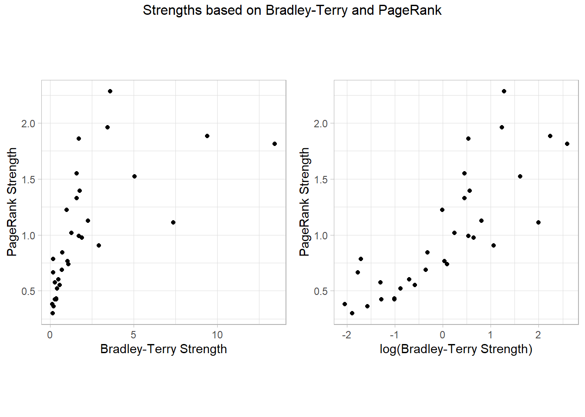
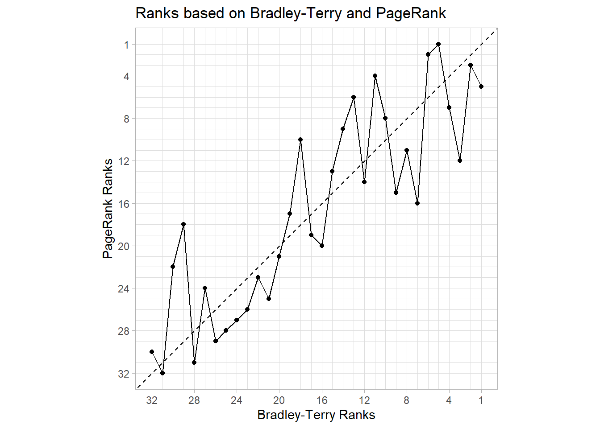

I implement from scratch two approaches for learning a ranking from imcomplete pairwise comparison data (Bradley-Terry model and PageRank). Then, I apply them to NFL data and compare the results.
Author
Dominik G. Eichhorn
Published
August 21, 2025
Motivation
Probably everyone is familiar with those tables in sports that rank teams, usually according to the number of games won. This seems to be a valide approach for tournaments where every team plays against every other team the same number of times. Such tournaments are called robin-round tournaments and examples include the Premier League as well as the Fußball and the Handball Bundesliga. Robin-round tournaments are a special type of complete comparisons.
However, there are also tournaments in which not every team plays against every other team, i.e. incomplete comparisons. Examples include the NFL in American Football or knock-out tournaments such as playoffs or cups. In such tournaments, some teams might face on average stronger opponents than other teams. Therefore, the number of wins may not reflect the true strength of a team and may not be used to rank teams. Instead, it becomes important, how strong the opponents were, against which a team won or lost.
So I was wondering, what approaches there are for learning a ranking from data on the outcome of incomplete pairwise comparisons. Note that this problem does not just arise in sports but in a variety of other domains. For instance, in preference modelling, multiple individuals must choose between different pairs of items. Based on the outcomes, one tries to rank all of the items. Nevertheless, I will stick to the application in sports.
I found among others two interesting approaches: the PageRank algorithm and the Bradley-Terry model. I will implement both from scratch in R after having shortly described them. Furthermore, I will compare the results of my own implementation to the ones returned by dedicated libraries. For illustration, I will use data on the outcome of every NFL game played during the 2024-2025 regular season.
Data
Before diving into the two approaches, I scrape and prepare the data on the outcome of every NFL game played during the 2024-2025 regular season (of all \(n=32\) NFL teams). The data is available at: https://www.pro-football-reference.com/years/2024/games.htm.
library(rvest) # web page scrapinglibrary(dplyr) # data manipulationsurl <-"https://www.pro-football-reference.com/years/2024/games.htm#games"page <-read_html(url)games <- page %>%html_node("table#games") %>%html_table(header=TRUE) %>%as.data.frame()# drop irrelevant colsgames <- games[, c(1,5,7)]names(games) <-c("Week", "Winner", "Loser")# keep only games during regular season (i.e. int-valued week)games <- games %>%filter(grepl("^[0-9]+$", Week)) %>%select(Winner, Loser)teams <-sort(unique(c(games$Winner, games$Loser)))n_teams <-length(teams)head(games)
Winner Loser
1 Kansas City Chiefs Baltimore Ravens
2 Philadelphia Eagles Green Bay Packers
3 Pittsburgh Steelers Atlanta Falcons
4 Buffalo Bills Arizona Cardinals
5 New Orleans Saints Carolina Panthers
6 Chicago Bears Tennessee Titans
For both approaches, it is more useful to aggregate the outcomes of the games in a win matrix. The win matrix is given by: \[\textbf{W}=[w_{ij}]_{i=1,\dots,\, n, j=1, \dots, n}\] where \(w_{ij}\) is the number of times team \(i\) has won against team \(j\). The diagonal elements of \(\textbf{W}\) are deliberately set to 0. The win matrix is computed as follows:
# initialize win matrix with zerosW <-matrix(rep(0, n_teams^2),nrow = n_teams,dimnames =list( teams, # row names teams # col names ))# to fill win matrix, iterate over all gamesfor (g in1:dim(games)[1]) { W[games[g, "Winner"], games[g, "Loser"]] <- W[games[g, "Winner"], games[g, "Loser"]] +1}
Bradley-Terry Model
The Bradley-Terry model specifies the probability that a given team wins when playing against a given opponent. This probability only depends on the strengths of both teams. Using maximum likelihood estimation, these strengths can be estimated for all teams given the results of games played in the past. Subsequently, the teams can be ranked by sorting them according to the estimated strengths in descending order.
Approach
Under the Bradley-Terry model, the probability that in a direct comparison team \(i\) would beat team \(j\) is given by: \[ P(\text{"i beats j"}) = \frac{\theta_i}{\theta_i + \theta_j}\] for \(i,j = 1, \dots, n, i \neq j\). \(\theta_i\) can be thought of as measuring the strength of team \(i\). Ceteris paribus, the greater \(\theta_i\), the greater the probability that team \(i\) wins against any other team.
Under independence, the likelihood function (i.e. the probability of the observed data under \(\theta_1, \dots, \theta_n\)) is \[L(\theta_1, \dots, \theta_n) = \prod_{i=1}^n \prod_{j=1}^n \left(\frac{\theta_i}{\theta_i + \theta_j}\right)^{w_{ij}}.
\] Note that \(w_{ii}\) is set to 0 as mentioned above. The log-likelihood function is \[ l(\theta_1, \dots, \theta_n) = \sum_{i=1}^n \sum_{j=1}^n w_{ij} \ln(\theta_i) - \sum_{i=1}^n \sum_{j=1}^n w_{ij} \ln(\theta_i + \theta_j)\] The maximum likelihood estimates (MLEs) are obtained by maximizing \(l\) w.r.t. \(\theta_1, \dots, \theta_n\). For this purpose the gradient of \(l\) is required. It is given by: \[ \begin{align} \frac{\partial l}{\partial \theta_k}(\theta_1, \dots, \theta_n) &= \frac{1}{\theta_k} \sum_{j=1}^n w_{kj} - \left[ \overbrace{ \sum_{i=1}^n \frac{w_{ik}}{\theta_i + \theta_k}}^{\text{case: }j=k} + \overbrace{\sum_{j=1}^n \frac{w_{kj}}{\theta_k + \theta_j}}^{\text{case: }i=k} \right], \\
&= \frac{1}{\theta_k} \sum_{j=1}^n w_{kj} - \left[ \sum_{j=1}^n \frac{w_{jk}}{\theta_j + \theta_k} + \sum_{j=1}^n \frac{w_{kj}}{\theta_k + \theta_j} \right],\\
&= \frac{1}{\theta_k} \sum_{j=1}^n w_{kj} - \sum_{j=1}^n \frac{w_{jk} +w_{kj}}{\theta_j + \theta_k} , &\forall k=1,\dots n \end{align}\] Note that I index the differentiation variable by \(k\) in order to clearly separate it from the summation index \(i\). Setting the gradient equal to 0 and rearranging yields: \[ \theta_k = \frac{\sum_{j=1}^n w_{kj}}{\sum_{j=1}^n \frac{w_{kj} + w_{jk}}{\theta_k + \theta_j}}, \; \forall k=1,\dots,n \] Starting with some initial values \(\theta_1^{(0)}, \dots, \theta_k^{(0)}\), and using the above equation, the MLEs are iteratively obtained as follows: \[\begin{align}
\theta_k^{(t+1)} &\gets \frac{\sum_{j=1}^n w_{kj}}{\sum_{j=1}^n \frac{w_{kj} + w_{jk}}{\theta_k^{(t)} + \theta_j^{(t)}}}, &\; \forall k=1,\dots,n \\
\theta_k^{(t+1)} &\gets \frac{1}{\left(\prod_{j=1}^n \theta_j^{(t+1)} \right)^{1/n}}, &\; \forall k=1,\dots,n
\end{align}\] The second operation normalizes the MLEs such that their geometric mean is 1 (Newman 2023).
Implementation
Having outlined how the MLEs are obtained in the Bradley-Terry model, below, you find my from-scratch implementation of it.
my_bradleyterry <-function(W, n_iter=1000){ n <-dim(W)[1]# initialize strength vector theta,# before and after update,# with all teams equally strong theta.old <-rep(1, n)names(theta.old) <-colnames(W) theta.new <-rep(1,n)names(theta.new) <-colnames(W)for (t in1:n_iter) {for (i in1:n) { theta.new[i]<-sum(W[i,])/(sum((W[i,]+W[,i])/(theta.old[i]+theta.old ))) }# normalize by geomtric mean theta.new <- theta.new/prod(theta.new)^(1/n)# update theta.old <- theta.new }return(theta.new)}
I apply my function for computing the MLEs to the winning matrix of the 2024-2025 regular season retrieved above.
my_btm_mles <-my_bradleyterry(W)head(my_btm_mles)
Arizona Cardinals Atlanta Falcons Baltimore Ravens Buffalo Bills
1.0972960 0.9883723 3.4372074 3.5989702
Carolina Panthers Chicago Bears
0.3647306 0.4153262
Next, I sort the teams in descending order according to their estimated strengths and construct a horizontal bar char.
Show code
library(ggplot2) # for visualizationdf <-data.frame(team =names(my_btm_mles),score =as.numeric(my_btm_mles))p <-ggplot(df, aes(reorder(team, score), y=score)) +geom_col(fill="#0b0b64") +coord_flip() +labs(title="Ranking and Strength based on Bradley-Terry",y="Strength",x="Team") +theme_light()ggsave("cover.jpg", plot = p, width =8, height =6, dpi =300, bg ="white")p
Now, let’s compare the results of my from-scratch implementation to those of the BradleyTerry2 R package.
# use built-in function to convert W in format required by BradleyTerry2dt <- BradleyTerry2::countsToBinomial(W)# fit Bradley-Terry model using BradleyTerry2package_btm <- BradleyTerry2::BTm(cbind(win1, win2), player1, player2, data=dt)# extract Bradley-Terry model MLEspackage_btm_mles <- BradleyTerry2::BTabilities(package_btm)# compare resultsbtm_compare <-cbind(my_btm_mles, "package_btm_mles"=package_btm_mles[,"ability"])head(btm_compare)
At first sight, it seems that the results returned by the BradleyTerry2 package and my results differ quite alot. Therefore, I had a closer look at the documentation of the BradleyTerry2 package. I found out that they utilize a slightly different specification of the Bradley-Terry model (let’s call it the exponential specification). However, both specifications are equivalent in the sense that, first, both result in the same winning probabilities and, second, that there is an explicit formula for converting their parameters.
The exponential specification is given by: \[P(\text{"i beats j"}) = \frac{e^{s_i}}{e^{s_i} + e^{s_j}}, \; \forall i,j=1,\dots, n\] and \(s_0\) is set to be 0. The formulas for converting the parameters of the two specifications are: \[ \begin{align} s_i = \ln \left(\frac{\theta_i}{\theta_0}\right), \\
\theta_i = \exp(s_i) \times \theta_0
\end{align}\] So, let’s now convert the parameters I estimated into the format of the exponential specification and then compare it to the output of the BradleyTerry2 package.
# compare resultsmy_conv_btm_mles <-log(my_btm_mles/my_btm_mles[1])btm_compare <-cbind(my_btm_mles, my_conv_btm_mles, "package_btm_mles"=package_btm_mles[,"ability"])# compute Euclidean distance between my_conv_btm_mles and package_btm_mlesdist <-sqrt(sum((btm_compare[,2]-btm_compare[,3])^2))print(paste("Euclidean distance between my_conv_btm_mles and package_btm_mles:", dist))
[1] "Euclidean distance between my_conv_btm_mles and package_btm_mles: 5.39456400516441e-12"
After converting my MLEs, they are exactly the same as the MLEs returned by the BradleyTerry2 package.
PageRank
An alternative approach for ranking is the PageRank algorithm. Originally, it was developed by Google for ranking webpages based on their importance. A webpage is considered important if many other important webpages point to it via links. In sports, team strength plays the same role as website importance: a team is strong if many other strong opponent team lose against it. When team \(i\) beats team \(j\) it is as if website \(j\) points to website \(i\) (yes, it is that way around, think about it).
Approach
PageRank does not treat all of the opponents of a given team equally. In fact, it accounts for both, the strength of the opponents as well as their total number of games lost. Opponents with higher strength get more weight, while opponents with a higher total number of games lost get a less weight.
Based on this mechanism, the strength of team \(i\) according to PageRank, \(p_i\), is recursively defined as: \[ p_i = (1-d) + d \sum_{j=1}^n \left( \frac{w_{ij}}{c_j} \right) p_j \] As before, \(w_{ij}\) is the number of times team \(i\) won against team \(j\). \(c_j = \sum_{i=1}^n w_{ij}\) is the total numer of games lost by team \(j\). The term inside the sum works according to the above described mechanism: Wins against an opponent \(j\) with high strength (i.e. high \(p_j\)) get more weight, while wins against an opponent with a high number of total games lost (i.e. high \(c_j\)) get less weight. This is then summed up across all opponents and weighted by the damping factor \(d \in [0,1)\) (usually, \(d\) is set to 0.85). \(d\) guarantees the existence of (finite) soultions even if there is a team that always won or always lost.
The above can be written in matrix-vector notation as follows: \[ \textbf{p} = (1-d) \, \textbf{e} + d \, \textbf{W} \,\textbf{D}_c^{-1} \, \textbf{p} \] where \(\textbf{p}=[p_1, \dots, p_n]^T\) is the PageRank strength vector and \(\textbf{e}\) is an \(n\)-dimensional vector of ones. \(\textbf{D}=\text{diag}(c_1, \dots, c_n)\) is a diagonal matrix and \(\textbf{W}\) is the win matrix introduced above.
To get a unique solution, PageRank requires a restriction on the scale of the strength vector. Therefore, the restriction that \(\textbf{p}\) must to sum up to \(n\), i.e. \(\textbf{e}^T \, \textbf{p} = n\), is introduced. This is the same as saying that the average strength is 1. Using this, the following holds: \[ \textbf{e} = \frac{\textbf{e} \, \textbf{e}^T \, \textbf{p}}{n}\] Plugging this into the recursive formula for \(\textbf{p}\) and factoring out \(\textbf{p}\) on the right hand side yields: \[ \begin{align}
\textbf{p} &= \left[ (1-d) \, \textbf{e} \, \textbf{e}^T/n + d \, \textbf{W} \,\textbf{D}_c^{-1} \right] \textbf{p} \\
&= \mathbf{A} \, \mathbf{p}
\end{align}\]
So the PageRank strength vector is the eigenvector corresponding to an eigenvalue of 1 of matrix \(\textbf{A}\). In fact, it can be shown that 1 is the largest eigenvalue of \(\textbf{A}\). It is known that the power iteration (or Von Mises iteration) method converges to the eigenvector corresponding to the largest eigenvalue, in this case the eigenvector corresponding to the eigenvalue 1. So given some initial vector\(\textbf{p}_0\), the PageRank strength vector can be calculated iteratively as: \[
\begin{align}
\textbf{p}^{(t+1)} &\gets \textbf{A} \, \textbf{p}^{(t)} \\
\textbf{p}^{(t+1)} &\gets \frac{\textbf{p}^{(t+1)}}{\textbf{e}^T \, \textbf{p}^{(t+1)}} n
\end{align}
\] The second operation is a normalization ensuring that \(\textbf{e}^T \, \textbf{p}^{(t+1)} = n\)Hastie et al. (2009).
Implementation
Below, you can see my implementation of the PageRank approach.
my_pagerank <-function(W, d=0.85, n_iter=1000){ n <-dim(W)[1] c <-colSums(W) A <- (1-d)*rep(1,n) %*%t(rep(1,n))/n + d*W%*%diag(1/c)# initialize pagerank strength vector# with all teams equally strong p <-rep(1/n, n)names(p) <-colnames(W)# power iterationfor (t in1:n_iter) { p <- A%*%p p <- (p/sum(p))*n }return(p)}
Let’s apply my implementation of the PageRank to the win matrix.
[,1]
Arizona Cardinals 0.7385196
Atlanta Falcons 1.2251638
Baltimore Ravens 1.9602687
Buffalo Bills 2.2841688
Carolina Panthers 0.4254393
Chicago Bears 0.5206048
And again I visualize the estimated strengths and the ranking using a horizontal bar char.
Show code
df <-data.frame(team =rownames(my_pagerank_est),score =as.numeric(my_pagerank_est))ggplot(df, aes(reorder(team, score), y=score)) +geom_col(fill="#d72638") +coord_flip() +labs(title="Ranking and Strength based on PageRank",y="Strength",x="Team") +theme_light()

As for the Bradley-Terry model, I want to compare my from-scratch implementation of PageRank to the one provided by the igraph R package. Before actually compute the PageRank strength, the igraph package requires to construct a graph using the transpose of the win matrix as adjacency matrix.
# construct graph from tranpose of win matrixgraphObj <- igraph::graph_from_adjacency_matrix(t(W), weighted =TRUE, mode ="directed")# run pagerankpackage_pagerank_est <- igraph::page_rank(graphObj)$vector# compare resultspagerank_compare <-cbind(my_pagerank_est, package_pagerank_est, my_pagerank_est/package_pagerank_est)colnames(pagerank_compare) <-c("my_pagerank_est","package_pagerank_est","ratio")head(pagerank_compare)
Obviously, my values and the values returned by the igraph package are not the same. However, when dividing them by each other it becomes apparent that my values are just 32 times the values returned by the package. The reason for the difference in scale is the following: The igraph package uses as restriction on the strength vector that it sums up to 1. However, I use as restriction that the strength vector sums up to \(n=32\). Importantly, this difference in scaling has no influence on the rankings.
Comparison
Having in detail covered each of the two approaches separately, let’s now compare their results.
When looking at the above plot, two aspects are particularly striking. First, there is alot more dispersion among the Bradley-Terry strengths than among the PageRank strengths. Second, it seems that the ranking obtained from PageRank is not identical to the one returned by the Bradley-Terry model (Obviously, when the teams are sorted in descending order based on their Bradley-Terry strengths (as in the above plot) they are not at the same time also sorted in descending order based on the PageRank strengths).
Show code
p1 <-ggplot(df, aes(x=my_btm_mles, y=my_pagerank_est)) +geom_point() +coord_equal() +labs(y="PageRank Strength",x="Bradley-Terry Strength") +theme_light() +theme(aspect.ratio =1)p2 <-ggplot(df, aes(x=log(my_btm_mles), y=my_pagerank_est)) +geom_point() +coord_equal() +labs(y="PageRank Strength",x="log(Bradley-Terry Strength)") +theme_light() +theme(aspect.ratio =1)gridExtra::grid.arrange(p1, p2, ncol=2,top="Strengths based on Bradley-Terry and PageRank")

Above, on the left, you can see a scatterplot of the PageRank strengths against the Bradley-Terry strengths. From that plot, it seems that there is rather a logarithmic relationship between the two. Therefore, on the right, I also show a plot of the PageRank strengths against log of the Bradley-Terry strengths. It seems that both approaches assign high strengths (and low strengths, respectively) to similar teams. However, there seems to be less agreement of both approaches on strong teams than on weak teams. This becomes also apparent form the following plot.
Show code
ggplot(df, aes(x=rank(-my_btm_mles), y=rank(-my_pagerank_est))) +geom_point() +geom_line() +geom_abline(linetype="dashed") +scale_x_reverse(breaks=c(1,4*(1:8)), minor_breaks=1:32) +scale_y_reverse(breaks=c(1,4*(1:8)), minor_breaks=1:32) +coord_equal() +labs(title="Ranks based on Bradley-Terry and PageRank",x="Bradley-Terry Ranks",y="PageRank Ranks") +theme_light()

The above plot compares the rankings derived from the strength estimates of PageRank and the Bradley-Terry model. If both approaches would result in identical rankings, then the solid line would perfectly lie on the dashed line. The further the solid line is away from the dashed line, the greater the difference between the two rankings. This plot supports the observations stated above.
Conclusion
Overall, PageRank and the Bradle-Terry model yield quite similar rankings of the 32 NFL teams. However, if I had to choose one of them I would pick the Bradley-Terry model. This is because, unlike PageRank, the Bradley-Terry model not only returns a ranking, but it also allows to make predictions on the probability that a certain team would win against a given opponent.
References
Hastie, Trevor, Robert Tibshirani, Jerome Friedman, et al. 2009. “The Elements of Statistical Learning.” Springer series in statistics New-York.
Newman, Mark EJ. 2023. “Efficient Computation of Rankings from Pairwise Comparisons.”Journal of Machine Learning Research 24 (238): 1–25.
Page, Lawrence, Sergey Brin, Rajeev Motwani, and Terry Winograd. 1999. “The PageRank Citation Ranking: Bringing Order to the Web.” Stanford infolab.